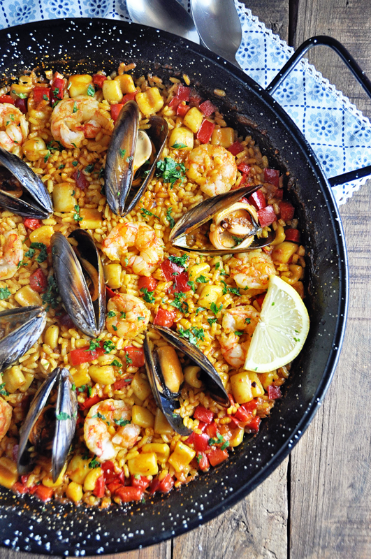

Spanish Paella

How to make a Spanish paella.
These spanish paellas will blow your medias off. They'll have you thinking "Dang why did my family have to emigrate from europe?". But you don't have to go back to the motherland to enjoy this delicious meal. With a few easy steps you can be enjoying Spanish paella right at home.
Ingredients
4 tablespoons olive oil
1 onion, chopped
2 cloves garlic, minced
1 red bell pepper, chopped
4 ounces Spanish chorizo, casing discarded and cut into 1/4-inch dice
2 skinless, boneless chicken breast halves - cut into 1-inch cubes
1 (12 ounce) package uncooked Arborio rice
5 cups chicken broth
½ cup white wine
sprig fresh thyme
1 pinch saffron
salt to taste
ground black pepper to taste
2 squid, cleaned and cut into 1-inch pieces
2 tomatoes, seeded and chopped
½ cup frozen green peas
12 large shrimp, peeled and deveined
1 pound mussels, cleaned and debearded
¼ cup chopped Italian flat leaf parsley
8 slices lemon, for garnish